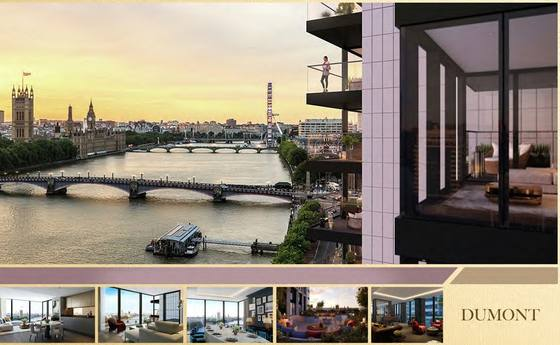
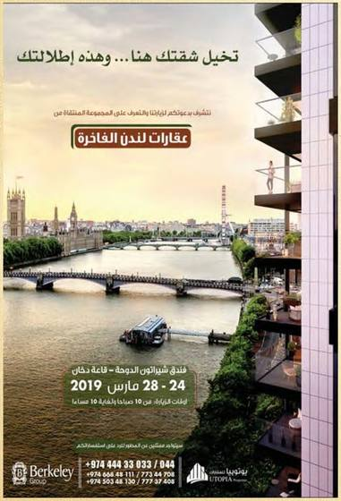
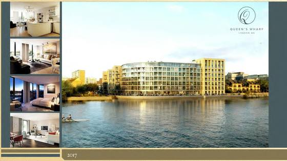
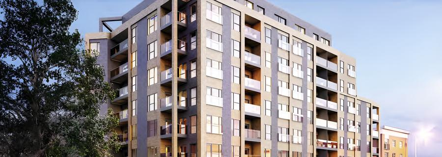
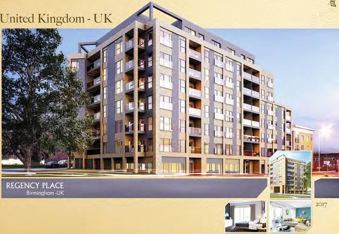
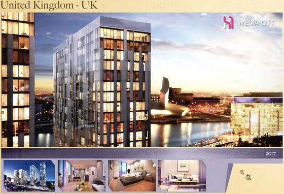
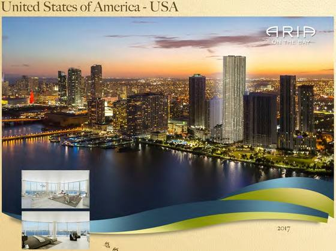
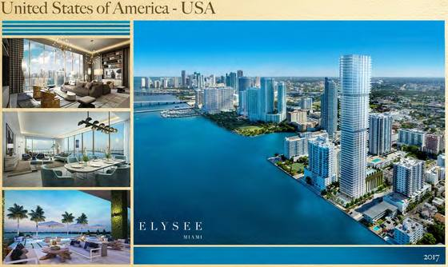
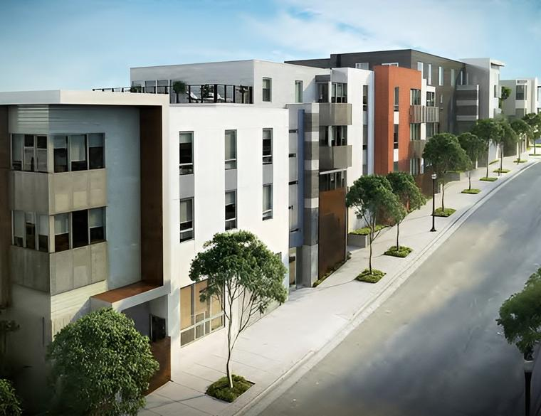

All125 United Kingdom59 Türkiye17 UAE17 Thailand6 United States6 Canada4 Egypt3 France3 Jordan3 Oman3 Cyprus1 Qatar1 Country not stated2
Search Order Newest first Oldest first
Showing 125 projects
2019 Battersea ReachLondon (Battersea) United Kingdom 2 archive images Chelsea CreekLondon (Chelsea) United Kingdom 2 archive images DumontLondon United Kingdom Berkeley 4 archive images 
Projects profile TREG projects profile, page 5
Advertisement TREG advertisement profile, page 3Press Al Raya, Qatar, 27 March 2019Press Lusail, Qatar, 24 March 2019Fulham ReachLondon (Fulham) United Kingdom 2 archive images Green Park Village United Kingdom 3 archive images Monkston Park United Kingdom 1 archive image Park Central United Kingdom 2 archive images Regent Plaza United Kingdom 1 archive image Richmond Chase, Ham Gate United Kingdom 2 archive images Royal Warwick United Kingdom 1 archive image The Bank Tower United Kingdom 2 archive images The Oak Houses (The Winster, The Bramhall) United Kingdom 2 archive images Nurol Life Türkiye Nurol 2 archive images Nurol Park Türkiye Nurol 2 archive images Seafront scheme (name not shown) Türkiye 2 archive images 2018 Express 24 Türkiye 1 archive image Gol Plus IstanbulIstanbul Türkiye 2 archive images Taj YalovaYalova Türkiye 1 archive image 2017 Millbrook ParkMill Hill United Kingdom 1 archive image Queen's WharfHammersmith, London W6 United Kingdom 2 archive images 
Projects profile TREG projects profile, page 25Advertisement TREG advertisement profile, page 13Regency PlaceBirmingham United Kingdom SevenCapital 3 archive images 
Developer rendering TREG corporate profile
Projects profile TREG projects profile, page 30Advertisement TREG advertisement profile, page 15The QuadrantBirmingham United Kingdom 1 archive image X1 Media CityMedia City, Manchester United Kingdom 2 archive images 
Projects profile TREG projects profile, page 31Advertisement TREG advertisement profile, page 13X1 The Landmark United Kingdom 2 archive images X1 The Tower United Kingdom 1 archive image 1200 Avenue CollectionNew York United States 2 archive images Aria on the Bay United States 2 archive images Developer rendering TREG corporate profile
Projects profile TREG projects profile, page 32Brickell Flatiron United States 2 archive images Champions GateOrlando United States 2 archive images Elysee United States 2 archive images Developer rendering TREG corporate profile
Projects profile TREG projects profile, page 35ShipyardSan Francisco United States 2 archive images 
Developer rendering TREG corporate profileProjects profile TREG projects profile, page 372016 Adelphi Wharf Phase ThreeManchester United Kingdom Fortis 2 archive images Projects profile TREG projects profile, page 52Advertisement TREG advertisement profile, page 20Albion HouseBirmingham United Kingdom SevenCapital 2 archive images Projects profile TREG projects profile, page 50Advertisement TREG advertisement profile, page 21Alt Grove United Kingdom 1 archive image Projects profile TREG projects profile, page 51Carver House United Kingdom 1 archive image Projects profile TREG projects profile, page 41Churchill PlaceBasingstoke United Kingdom SevenCapital 2 archive images Projects profile TREG projects profile, page 47Advertisement TREG advertisement profile, page 21Danforth Apartments, Fortis Quay United Kingdom 1 archive image Projects profile TREG projects profile, page 48Dayus House United Kingdom 1 archive image Projects profile TREG projects profile, page 49Frederick Street United Kingdom 1 archive image Projects profile TREG projects profile, page 42Jameson House United Kingdom 1 archive image Projects profile TREG projects profile, page 45John Street United Kingdom 1 archive image Projects profile TREG projects profile, page 43Madison HouseBirmingham United Kingdom SevenCapital 4 archive images Developer rendering TREG corporate profileProjects profile TREG projects profile, page 40Advertisement TREG advertisement profile, page 22Press Arab Times, Kuwait, 11 April 2016Milton Keynes homes ("Fantastic homes in the ideal Milton Keynes locations")Milton Keynes United Kingdom 3 archive images Projects profile TREG projects profile, page 38Advertisement TREG advertisement profile, page 8Advertisement TREG advertisement profile, page 14Regent HouseBarnsley United Kingdom 1 archive image Projects profile TREG projects profile, page 44SilkhouseLiverpool United Kingdom Fortis 3 archive images Developer rendering TREG corporate profileProjects profile TREG projects profile, page 39Advertisement TREG advertisement profile, page 20Studio 8 at Douro House United Kingdom 1 archive image Projects profile TREG projects profile, page 46Aquabella BaysideToronto Canada Tridel; Hines 3 archive images Developer rendering TREG corporate profileProjects profile TREG projects profile, page 54Advertisement TREG advertisement profile, page 16Islington Terrace Canada 1 archive image Projects profile TREG projects profile, page 55SQ2, Spadina + Queen Canada 2 archive images Developer rendering TREG corporate profileProjects profile TREG projects profile, page 56Ten YorkToronto Canada Tridel 5 archive images Projects profile TREG projects profile, page 53Advertisement TREG advertisement profile, page 16Press Al Anbaa, Kuwait, 6 November 2016Press Arab Times, Kuwait, 3 November 2016Press Kuwait Times, Kuwait, 3 November 2016Al Naseem 1 villasSalalah Oman 2 archive images Projects profile TREG projects profile, page 67Advertisement TREG advertisement profile, page 24Al Zahraa residential complexSalalah Oman 2 archive images Projects profile TREG projects profile, page 68Advertisement TREG advertisement profile, page 24Salalah Park ComplexSalalah Oman 3 archive images Developer rendering TREG corporate profileProjects profile TREG projects profile, page 65Advertisement TREG advertisement profile, page 23Baan Mai Khao Thailand Sansiri 2 archive images Projects profile TREG projects profile, page 69Advertisement TREG advertisement profile, page 25Baan Plai Haad Thailand Sansiri 3 archive images Developer rendering TREG corporate profileProjects profile TREG projects profile, page 70Advertisement TREG advertisement profile, page 26NYE Thailand Sansiri 2 archive images Projects profile TREG projects profile, page 71Advertisement TREG advertisement profile, page 29Residential scheme (name not shown) Thailand Sansiri 2 archive images Projects profile TREG projects profile, page 73Advertisement TREG advertisement profile, page 29The Base Thailand Sansiri 3 archive images Developer rendering TREG corporate profileProjects profile TREG projects profile, page 72Advertisement TREG advertisement profile, page 27The Deck Thailand Sansiri 3 archive images Projects profile TREG projects profile, page 74Advertisement TREG advertisement profile, page 28Advertisement TREG advertisement profile, page 30Airport 24 Türkiye 1 archive image Projects profile TREG projects profile, page 58Amphora Village Türkiye 2 archive images Developer rendering TREG corporate profileProjects profile TREG projects profile, page 61Atakent 24 Türkiye 1 archive image Projects profile TREG projects profile, page 59Fabay Adaboku Evleri Türkiye Fabay 1 archive image Projects profile TREG projects profile, page 60Golf & Spa Resort Türkiye 1 archive image Projects profile TREG projects profile, page 63Halkali 24 Türkiye 2 archive images Projects profile TREG projects profile, page 21Projects profile TREG projects profile, page 62In the TREG profiles: 2016, 2018
Terrace LotusBeylikduzu, Istanbul Türkiye Inanlar 4 archive images Projects profile TREG projects profile, page 57Advertisement TREG advertisement profile, page 19Press Kuwait Times, Kuwait, 10 January 2017Press Al Anbaa, Kuwait, 8 January 2017Vira IstanbulIstanbul Türkiye Gul Proje 5 archive images Projects profile TREG projects profile, page 13Projects profile TREG projects profile, page 64Advertisement TREG advertisement profile, page 17Press Arab Times, Kuwait, 13 April 2016Press Kuwait Times, Kuwait, 13 April 2016In the TREG profiles: 2016, 2019
Sparkle TowersDubai Marina UAE 3 archive images Developer rendering TREG corporate profileProjects profile TREG projects profile, page 66Advertisement TREG advertisement profile, page 232015 7 The StrandLiverpool United Kingdom SevenCapital 2 archive images Projects profile TREG projects profile, page 76Advertisement TREG advertisement profile, page 32KettleworksBirmingham United Kingdom SevenCapital 3 archive images Projects profile TREG projects profile, page 75Advertisement TREG advertisement profile, page 31Press Arab Times, Kuwait, 11 April 2016Pearl WorksSheffield United Kingdom 2 archive images Press Kuwait Times, Kuwait, 6 September 2015Press Al Qabas, Kuwait, 6 September 2015RHH, KidderminsterKidderminster United Kingdom SevenCapital 2 archive images Projects profile TREG projects profile, page 77Advertisement TREG advertisement profile, page 33Rose Court United Kingdom 1 archive image Projects profile TREG projects profile, page 78Entre Deux France Imaprim 4 archive images Projects profile TREG projects profile, page 81Advertisement TREG advertisement profile, page 35Press Kuwait Times, Kuwait, 16 November 2015Press Al Qabas, Kuwait, 16 November 2015L'ActuelAnnecy-le-Vieux (near Geneva) France Imaprim 5 archive images Developer rendering TREG corporate profileProjects profile TREG projects profile, page 79Advertisement TREG advertisement profile, page 34Press Kuwait Times, Kuwait, 16 November 2015Press Al Qabas, Kuwait, 16 November 2015Residence Five France Imaprim 4 archive images Projects profile TREG projects profile, page 80Advertisement TREG advertisement profile, page 36Press Kuwait Times, Kuwait, 16 November 2015Press Al Qabas, Kuwait, 16 November 20152014 Caddington landCaddington United Kingdom 4 archive images Projects profile TREG projects profile, page 84Advertisement TREG advertisement profile, page 39Advertisement TREG advertisement profile, page 44Advertisement TREG advertisement profile, page 46Great Minster HouseLondon SW1 United Kingdom Barratt London 5 archive images Developer rendering TREG corporate profileProjects profile TREG projects profile, page 82Advertisement TREG advertisement profile, page 43Press Al Anbaa, Kuwait, 17 November 2014Press Al Anbaa, Kuwait, 16 November 2014Queensland TerraceLondon United Kingdom Barratt London 4 archive images Projects profile TREG projects profile, page 83Advertisement TREG advertisement profile, page 42Press Al Anbaa, Kuwait, 17 November 2014Press Al Anbaa, Kuwait, 16 November 2014The ChaseMilton Keynes (Shelley Avenue, Ashland) United Kingdom 2 archive images Projects profile TREG projects profile, page 85Advertisement TREG advertisement profile, page 452013 Broughton Chase United Kingdom 1 archive image Projects profile TREG projects profile, page 88Broughton Mews United Kingdom 1 archive image Projects profile TREG projects profile, page 89One HockleyNottingham United Kingdom 1 archive image Press Kuwait Times, Kuwait, 24 April 2013St Giles ParkMilton Keynes United Kingdom Barratt Homes 3 archive images Projects profile TREG projects profile, page 86Advertisement TREG advertisement profile, page 51Advertisement TREG advertisement profile, page 52Tattenhoe Park United Kingdom David Wilson Homes 1 archive image Projects profile TREG projects profile, page 872012 GyoseiMilton Keynes United Kingdom 1 archive image Projects profile TREG projects profile, page 93Thorpe landThorpe United Kingdom 3 archive images Projects profile TREG projects profile, page 94Advertisement TREG advertisement profile, page 53Advertisement TREG advertisement profile, page 62Terrace DogaIstanbul Türkiye Inanlar 2 archive images Projects profile TREG projects profile, page 92Advertisement TREG advertisement profile, page 59Terrace MixEsenyurt, Istanbul Türkiye Inanlar 11 archive images Developer rendering TREG corporate profileProjects profile TREG projects profile, page 91Advertisement TREG advertisement profile, page 18Advertisement TREG advertisement profile, page 38Advertisement TREG advertisement profile, page 47Advertisement TREG advertisement profile, page 48Advertisement TREG advertisement profile, page 55Advertisement TREG advertisement profile, page 56Press Al Anbaa, Kuwait, 30 March 2015Press Al Qabas, Kuwait, 3 November 2013Press Kuwait Times, Kuwait, 11 March 2013Terrace TemaIstanbul Türkiye Inanlar 11 archive images Developer rendering TREG corporate profileProjects profile TREG projects profile, page 90Advertisement TREG advertisement profile, page 19Advertisement TREG advertisement profile, page 37Advertisement TREG advertisement profile, page 49Advertisement TREG advertisement profile, page 50Advertisement TREG advertisement profile, page 57Advertisement TREG advertisement profile, page 58Press Al Anbaa, Kuwait, 18 January 2015Press Al Rai, Kuwait, 4 March 2015Press Al Anbaa, Kuwait, 6 April 20142011 Gerrards Cross landGerrards Cross United Kingdom 1 archive image Projects profile TREG projects profile, page 96Toddington landToddington United Kingdom 3 archive images Projects profile TREG projects profile, page 96Advertisement TREG advertisement profile, page 64Advertisement TREG advertisement profile, page 67Palm View 6th of October6th of October Egypt Pyramisa 8 archive images Developer rendering TREG corporate profileProjects profile TREG projects profile, page 95Advertisement TREG advertisement profile, page 40Advertisement TREG advertisement profile, page 65Advertisement TREG advertisement profile, page 70Press Al Anbaa, Kuwait, 29 March 2015Press Al Watan, Kuwait, 2 March 2015Press Al Sharq, Qatar, 2 March 20152010 Effingham landEffingham United Kingdom 1 archive image Projects profile TREG projects profile, page 962009 Ocean View United Kingdom 1 archive image Projects profile TREG projects profile, page 98Royal Connaught ParkBushey area ("5 minutes to Bushey station") United Kingdom Comer Homes Group 3 archive images Projects profile TREG projects profile, page 97Advertisement TREG advertisement profile, page 68Advertisement TREG advertisement profile, page 77King Alexander ResortPeyia, Paphos Cyprus 3 archive images Developer rendering TREG corporate profileProjects profile TREG projects profile, page 101Advertisement TREG advertisement profile, page 75Paradise GardensRed Sea Riviera Egypt Pyramisa 4 archive images Developer rendering TREG corporate profileProjects profile TREG projects profile, page 99Advertisement TREG advertisement profile, page 41Advertisement TREG advertisement profile, page 74Pyramisa Sharm El SheikhSharm El Sheikh Egypt Pyramisa 3 archive images Developer rendering TREG corporate profileProjects profile TREG projects profile, page 100Advertisement TREG advertisement profile, page 732008 Ripley Village, Grove Heath North landGrove Heath North, Surrey United Kingdom 3 archive images Projects profile TREG projects profile, page 106Advertisement TREG advertisement profile, page 66Advertisement TREG advertisement profile, page 78Al Nuzha Residential Jordan 1 archive image Projects profile TREG projects profile, page 104Marina PinnacleDubai UAE 1 archive image Projects profile TREG projects profile, page 109Masaar ResidenceDubai UAE 1 archive image Projects profile TREG projects profile, page 109Mashrabia ResidenceAjman UAE 2 archive images Projects profile TREG projects profile, page 108Advertisement TREG advertisement profile, page 79Nada TowerSharjah UAE 2 archive images Projects profile TREG projects profile, page 102Advertisement TREG advertisement profile, page 89Orchids TowerSharjah UAE 1 archive image Advertisement TREG advertisement profile, page 82Style TowerSharjah UAE 2 archive images Developer rendering TREG corporate profileProjects profile TREG projects profile, page 1022007 St James's Land United Kingdom 2 archive images Advertisement TREG advertisement profile, page 84Advertisement TREG advertisement profile, page 92Al Maha ResidentialUmm Al Sarab, Mafraq Jordan 3 archive images Projects profile TREG projects profile, page 103Advertisement TREG advertisement profile, page 81Advertisement TREG advertisement profile, page 88In the TREG profiles: 2007-2008
Ashrafiya housing projectMafraq Jordan 1 archive image Advertisement TREG advertisement profile, page 93The Land, Monaco TowersThe Pearl-Qatar Qatar The Land 4 archive images Developer rendering TREG corporate profileProjects profile TREG projects profile, page 107Advertisement TREG advertisement profile, page 95Press Strategiy, Not stated, 22 May 2006Moon Light TowerSharjah UAE 2 archive images Projects profile TREG projects profile, page 102Advertisement TREG advertisement profile, page 91Oasis Tower 2Dubai UAE Khamas 2 archive images Projects profile TREG projects profile, page 109Advertisement TREG advertisement profile, page 94Sharjah Investment CenterSharjah UAE SNASCO 3 archive images Projects profile TREG projects profile, page 105Advertisement TREG advertisement profile, page 76Advertisement TREG advertisement profile, page 90Sun Light TowerSharjah UAE 2 archive images Projects profile TREG projects profile, page 102Advertisement TREG advertisement profile, page 912006 Darman Lane landKent United Kingdom 1 archive image Projects profile TREG projects profile, page 106Mill Race landSt Albans, Hertfordshire United Kingdom 2 archive images Projects profile TREG projects profile, page 106Advertisement TREG advertisement profile, page 66LavenderAjman UAE 1 archive image Projects profile TREG projects profile, page 108LiliesAjman UAE 1 archive image Projects profile TREG projects profile, page 108Marina StarDubai Marina UAE 2 archive images Projects profile TREG projects profile, page 110Advertisement TREG advertisement profile, page 97Scala TowerBusiness Bay, Dubai UAE Al Madar 2 archive images Projects profile TREG projects profile, page 110Advertisement TREG advertisement profile, page 962005 Al Mohana Trade Center Country not stated 1 archive image Advertisement TREG advertisement profile, page 99Majestic Tower Country not stated 1 archive image Advertisement TREG advertisement profile, page 98Al Areifi Marina TowerDubai Marina UAE 2 archive images Projects profile TREG projects profile, page 110Press Strategiy, Not stated, 22 May 2006La MaisonDiscovery Gardens, Dubai UAE 1 archive image Advertisement TREG advertisement profile, page 99No projects match. Try another country or search.
Projects were built by their own developers and marketed by TREG. Years refer to the TREG profiles. Page images come from the TREG profiles of projects, advertisements and press, 2005–2019.